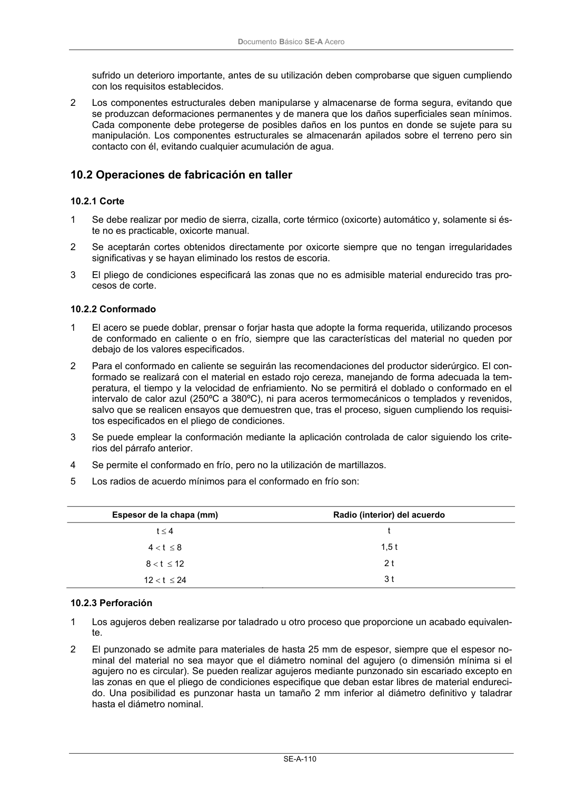

DB-SE-A Acero · edición 2007-10-23 · capa oficial
Documento DB-SE-A-oficial · SHA-256 del PDF 9ed9ea694aabfbda3bfbbef40dfe9223fde05d13c35bc2ba9751e5a96a22a64f
Copia fiel del PDF fuente · Fuente oficial
Ficha de la disposición en la fuente oficial
Formatos: JSON del segmento · Markdown
10.2 Operaciones de fabricación en taller 10.2.1 Corte 10.2.1 Corte 1 Se debe realizar por medio de sierra, cizalla, corte térmico (oxicorte) automático y, solamente si és- te no es practicable, oxicorte manual. 2 Se aceptarán cortes obtenidos directamente por oxicorte siempre que no tengan irregularidades significativas y se hayan eliminado los restos de escoria. 3 El pliego de condiciones especificará las zonas que no es admisible material endurecido tras pro- cesos de corte.
